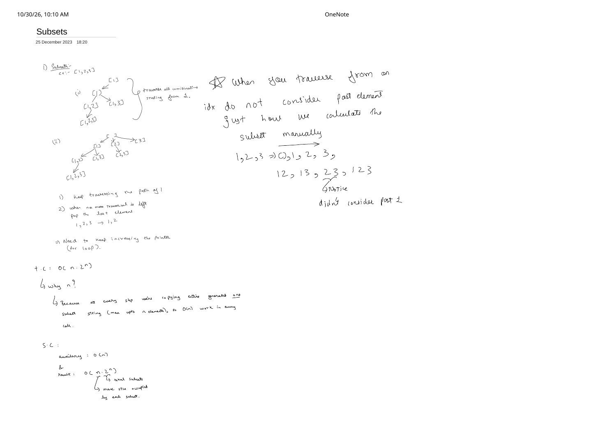

Subsets (LeetCode 78): Forward Index Traversal & the $O(n \cdot 2^n)$ Copy Proof
Expanded from handwritten competitive coding study note: 01_Subsets.pdf
Generating the power set is the foundational template for nearly every combination-style backtracking problem. Once you see why a single forward index pointer guarantees uniqueness without a hash set—and why a single mutable vector plus pop_back() avoids exponential intermediate allocations—problems like Subsets II and Combination Sum become one-line adaptations of the exact same loop.
Problem Statement
LeetCode 78 · Subsets
Given an integer array nums of unique elements, return all possible subsets (the power set). The solution set must not contain duplicate subsets (for example, [1, 2] and [2, 1] represent the same subset and only one may appear). You may return the subsets in any order.
Example: nums = [1, 2, 3] → [[], [1], [2], [3], [1, 2], [1, 3], [2, 3], [1, 2, 3]] ($2^3 = 8$ subsets).
Core Intuition: Never Look Past Your Current Index
In 01_Subsets.pdf, the key insight starts from observing how a human writes out all subsets of 1, 2, 3 by hand:
1, 2, 3 ⇒ (), 1, 2, 3, 12, 13, 23, 123.Star observation from the note: Look closely at
23. When we start from 2 (index 1), we do not consider past element 1 (index 0)! Every subset containing both 1 and 2 (namely [1, 2] and [1, 2, 3]) was already generated while traversing combinations starting from 1.
Reconsidering earlier indices would produce [2, 1], turning our subset generator into a permutation generator. Enforcing strictly increasing chosen indices ($i_1 \lt i_2 \lt \dots \lt i_k$) establishes a canonical representative for every subset automatically.
Turning Forward Traversal into Push / Pop Backtracking
The left half of 01_Subsets.pdf breaks the recursion on [1, 2, 3] into two concrete mechanics:
- Keep traversing forward down the current path: Starting from
[], pick1→[1], then pick2→[1, 2], then pick3→[1, 2, 3]. - When no further forward traversal is left, pop the last element and advance the pointer: At
[1, 2, 3], index3is out of bounds. Popping3restores[1, 2]; its loop is also exhausted, so popping2restores[1], where theforloop advances its pointer from index1(value2) to index2(value3) to form[1, 3]!
01_Subsets.pdf. Every one of the $2^3 = 8$ nodes is recorded immediately on entry; no wasted internal-only nodes are created.Three Ways to Generate Power Sets (Progression)
| Approach | Core Idea | Nodes / Iterations | Why Prefer / Avoid |
|---|---|---|---|
| 1. Bitmask Enumeration | Loop mask = 0 .. (1 << n) - 1; test bit $b$ |
$2^n$ masks $\times n$ bit checks | Zero recursion, simple for $n \le 20$, but awkward to prune by sum or duplicates |
| 2. Binary Pick / Not-Pick | At index i, branch include nums[i] vs exclude |
$2^{n+1} - 1$ tree nodes (answers at $2^n$ leaves) | Clean $O(n)$ stack, $2\times$ node count vs forward loop |
3. Forward for-Loop (Note's Choice) |
Record path, loop j = idx .. n-1, recurse j + 1 |
Exactly $2^n$ nodes (every node is an answer) | Directly extends to Subsets II, Combination Sum I–III, and Palindrome Partitioning! |
Step-by-Step Dry Run on [1, 2, 3]
| Call # | dfs(idx, path) |
Recorded Snapshot | Loop Choices & Undo Actions |
|---|---|---|---|
| 1 | dfs(0, []) | [] | Try j = 0 (push 1) |
| 2 | dfs(1, [1]) | [1] | Try j = 1 (push 2) |
| 3 | dfs(2, [1, 2]) | [1, 2] | Try j = 2 (push 3) |
| 4 | dfs(3, [1, 2, 3]) | [1, 2, 3] | Loop j = 3..2 empty → return; caller pops 3, then pops 2 |
| 5 | dfs(3, [1, 3]) | [1, 3] | From [1] with j = 2; return → pop 3, pop 1 |
| 6 | dfs(2, [2]) | [2] | From [] with j = 1; try j = 2 (push 3) |
| 7 | dfs(3, [2, 3]) | [2, 3] | Return → pop 3, pop 2 |
| 8 | dfs(3, [3]) | [3] | From [] with j = 2; return → pop 3, done! |
Clean C++ & Python Implementations
#include <vector>
using namespace std;
class Solution {
void dfs(int idx, const vector<int>& nums,
vector<int>& path, vector<vector<int>>& ans) {
// Every prefix node in the forward-index tree is a unique subset
ans.push_back(path); // O(path.size()) copy work
for (int j = idx; j < (int)nums.size(); ++j) {
path.push_back(nums[j]); // 1. CHOOSE nums[j]
dfs(j + 1, nums, path, ans); // 2. EXPLORE strictly right of j (never look back!)
path.pop_back(); // 3. UNDO: e.g., [1,2,3] -> [1,2]
}
}
public:
vector<vector<int>> subsets(vector<int>& nums) {
vector<vector<int>> ans;
ans.reserve(1 << nums.size());
vector<int> path;
path.reserve(nums.size());
dfs(0, nums, path, ans);
return ans;
}
};class Solution:
def subsets(self, nums: list[int]) -> list[list[int]]:
ans: list[list[int]] = []
path: list[int] = []
n = len(nums)
def dfs(idx: int) -> None:
ans.append(path[:]) # O(len(path)) shallow copy snapshot
for j in range(idx, n):
path.append(nums[j])
dfs(j + 1)
path.pop()
dfs(0)
return ansTime & Space Complexity Proof
Why Time Complexity Is $O(n \cdot 2^n)$ — Explaining the Extra $n$ Factor
01_Subsets.pdf highlights this exact interview follow-up: “T.C: $O(n \cdot 2^n)$ — why $n$?”
- Tree traversal edges: There are $\sum_{k=0}^{n} \binom{n}{k} = 2^n$ nodes and $2^n - 1$ recursive edges, each doing $O(1)$
push_back/pop_back. - Snapshot copy cost across all calls: At every node we copy the current subset into
ans. Since $\binom{n}{k}$ subsets have size $k$, the exact number of integers copied is: $$\sum_{k=0}^{n} k \binom{n}{k} = n \cdot 2^{n - 1} = \Theta(n \cdot 2^n).$$
- Time Complexity: $\Theta(n \cdot 2^n)$.
- Auxiliary Space Complexity: $O(n)$ for the active vector
pathand the recursion call stack (maximum depth $n$). - Result Space Complexity: $O(n \cdot 2^n)$ ($2^n$ total subsets, each occupying up to $n$ elements and $n / 2$ elements on average).
Key Edge Cases & Pitfalls
- Passing
idx + 1instead ofj + 1: A classic bug! Insidefor (int j = idx; j < n; ++j), writingdfs(idx + 1, ...)instead ofdfs(j + 1, ...)letsj = 2recurse back to index1, generating reversed duplicates like[3, 2]! - Appending a reference instead of a snapshot in Python: Writing
ans.append(path)instead ofans.append(path[:])appends $2^n$ aliases to the same list, which gets popped back to[]by the end—leaving[[], [], ..., []]! - Single-element array (
nums = [0]): Still produces $2^1 = 2$ subsets:[[], [0]]. Recordingans.push_back(path)before the loop captures[]automatically at the root call.
From the Handwritten Notes
View original handwritten page — 01_Subsets.pdf (Page 1)


01_Subsets.pdf, page 1: manual subset enumeration on [1, 2, 3] proving why traversal never looks back at past elements, push/pop mechanics, and separating $O(n)$ auxiliary space from $O(n \cdot 2^n)$ copy/output work.